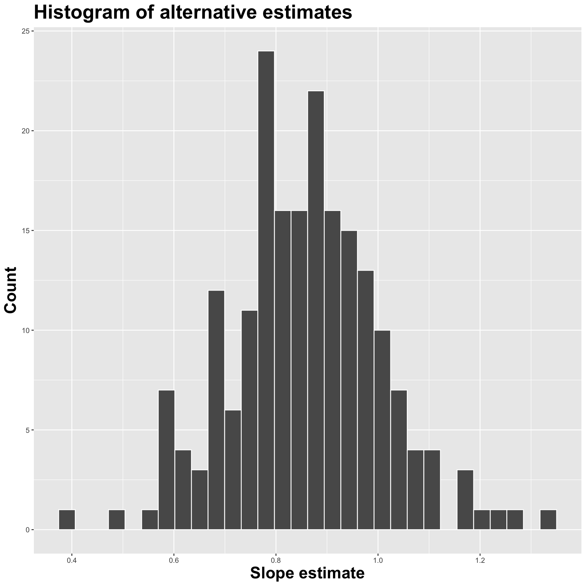
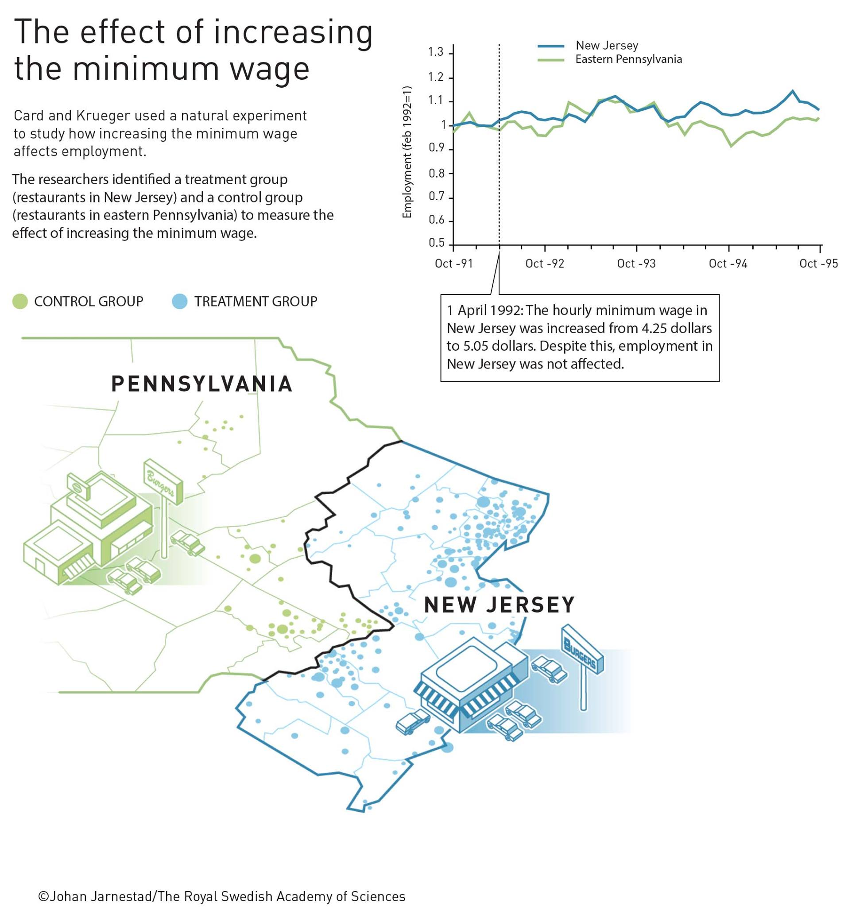

Inference conclusion
Lecture 22
John Zito
Duke University
STA 199 Spring 2025
2025-04-14
Course admin
While you wait
Go to your
aeproject in RStudio.Make sure all of your changes up to this point are committed and pushed, i.e., there’s nothing left in your Git pane.
Click Pull to get today’s application exercise file: ae-18-card-krueger.qmd.
Wait until you’re prompted to work on the application exercise during class before editing the file.
The home stretch
Tuesday 4/15: finish statistical inference
Thursday 4/17: communicating data science results
Monday 4/21: lab is a project work period
Tuesday 4/22: Farewell!
Wednesday 4/23: submit final project
Monday 4/28: submit peer eval 4
Tuesday 4/29: final exam
It’s not too late to make something happen
60% of the grade has yet to be counted. Furthermore…
We drop the lowest lab;
We drop 6 AEs (6 / 19 = 0.315);
We replace one in-class midterm with the final exam score (if it’s better).
If you missed Milestone 1, we replace with peer eval score;
We drop one of the first three peer evals.
Recap: statistical inference
Point estimation: what’s your best guess?
Point estimation: what’s your best guess?
Sampling variability
Different data >> Different estimate. But how different?
Reassuring: recompute your estimate on other data and get basically the same answer. Sampling variation is low. Uncertainty is low. Results are more reliable;
Concerning: recompute your estimate on new data and get a wildly different answer. Sampling variation is high. Uncertainty is high. Results are less reliable.
How do we operationalize this?
The bootstrap
Construct different, alternative datasets by sampling with replacement from your original data. Each bootstrap sample gives you a different estimate, and you can see how vigorously they wiggle around:

Interval estimation
Use the bootstrap distribution to construct a range of likely values for the unknown parameter:

We use quantiles (think IQR), but there are other ways.
Hypothesis testing
Two competing claims about \(\beta_1\): \[ \begin{aligned} H_0&: \beta_1=0\quad(\text{nothing going on})\\ H_A&: \beta_1\neq0\quad(\text{something going on}) \end{aligned} \]
Do the data strongly favor one or the other?
How can we quantify this?
Hypothesis testing
-
Think hypothetically: if the null hypothesis were in fact true, would my results be out of the ordinary?
- if no, then the null could be true;
- if yes, then the null might be bogus;
My results represent the reality of actual data. If they conflict with the null, then you throw out the null and stick with reality;
How do we quantify “would my results be out of the ordinary”?
Null distribution
If the null happened to be true, how would we expect our results to vary across datasets? We can use simulation to answer this:

This is how the world should look if the null is true.
Null distribution versus reality
Locate the actual results of your actual data analysis under the null distribution. Are they in the middle? Are they in the tails?

Are these results in harmony or conflict with the null?
Null distribution versus reality
Locate the actual results of your actual data analysis under the null distribution. Are they in the middle? Are they in the tails?
Are these results in harmony or conflict with the null?
Null distribution versus reality
Locate the actual results of your actual data analysis under the null distribution. Are they in the middle? Are they in the tails?

Are these results in harmony or conflict with the null?
p-value
The \(p\)-value is the probability of being even farther out in the tails of the null distribution than your results already were.
if this number is very low, then your results would be out of the ordinary if the null were true, so maybe the null was never true to begin with;
if this number is high, then your results may be perfectly compatible with the null.
p-value
p-value is the fraction of the histogram area shaded red:

Big ol’ p-value. Null looks plausible
p-value
p-value is the fraction of the histogram area shaded red:

p-value is basically zero. Null looks bogus.
p-value
p-value is the fraction of the histogram area shaded red:
p-value is…kinda small? Null looks…?
Discernibility level
How do we decide if the p-value is big enough or small enough?
-
Pick a threshold \(\alpha\in[0,\,1]\) called the discernibility level:
- If \(p\text{-value} < \alpha\), reject null and accept alternative;
- If \(p\text{-value} \geq \alpha\), fail to reject null;
Standard choices: \(\alpha=0.01, 0.05, 0.1, 0.15\).
Redux: association does not imply causation…until it does?
Plenty of nonsense correlations out there
Plenty of nonsense correlations out there
Plenty of nonsense correlations out there
So, when can we draw causal conclusions?
-
Best hope: run a controlled, randomized experiment:
- get a big, representative, random sample from target population;
- randomly divide subjects into treatment and control;
- difference in outcomes was caused by the treatment alone;
- but this may be too costly or unethical.
-
Observational data are very challenging:
- you couldn’t control gosh darned thing;
- different outcomes could be caused by confounding factors, which you may or may not have measured.
A proper, controlled experiment
Does treatment using embryonic stem cells (ESCs) help improve heart function following a heart attack? Each sheep in the study was randomly assigned to the ESC or control group, and the change in their hearts’ pumping capacity was measured in the study. A positive value corresponds to increased pumping capacity, which generally suggests a stronger recovery.
ABV
Model fit
# A tibble: 2 × 5
term estimate std.error statistic p.value
<chr> <dbl> <dbl> <dbl> <dbl>
1 (Intercept) -4.33 1.38 -3.14 0.00639
2 trmtesc 7.83 1.95 4.01 0.00102\[ \widehat{change}=-4.33+7.83\times \texttt{esc} \]
Remember…
\[ \widehat{change}=-4.33+7.83\times \texttt{esc} \]
trmtis categorical with two levels:ctrl(0) andesc(1).The control group has
esc = 0, so \[ \widehat{change} = -4.33; \]The treatment group has
esc = 1, so \[ \widehat{change} = -4.33+7.83=3.5. \]
Those were not magic numbers
# A tibble: 2 × 2
trmt mean_change
<fct> <dbl>
1 ctrl -4.33
2 esc 3.5 Don’t forget!
In a simple linear regression with a numerical response and a binary predictor, the slope estimate is the difference in the average response between the two groups.
Confidence interval
We are 95% confident that the true mean difference is between 4.34 and 11.7.
Competing claims
Are the data sufficiently informative to tell the difference between these two possibilities?
\[ \begin{aligned} H_0&: \beta_1=0 && (\text{no effect})\\ H_0&: \beta_1\neq0 && (\text{some effect})\\ \end{aligned} \]
- \(\beta_1\) is the difference in mean response between the treatment and control group;
- the alternative does not specify if the effect is positive or negative;
- the alternative does not specify that the effect is “large”.
Hypothesis test
The p-value is basically zero.
Cardinal Sins in Statistics No. 426
In a hypothetical world where the treatment has no effect, it would be very unlikely to get results like the ones we did;
Evidence is sufficient to reject the null. There is some effect;
If you are convinced by the experimental design, the effect is causal;
Is the effect large and meaningful and something you should base major decisions on? Statistics cannot answer that question!
Statistical discernibility \(\neq\) Substantive importance
A purely observational study
A random sample of US births from 2014:
Rows: 1,000
Columns: 13
$ fage <int> 34, 36, 37, NA, 32, 32, 37, 29, 30, 29, 30, 34, 28, 28,…
$ mage <dbl> 34, 31, 36, 16, 31, 26, 36, 24, 32, 26, 34, 27, 22, 31,…
$ mature <chr> "younger mom", "younger mom", "mature mom", "younger mo…
$ weeks <dbl> 37, 41, 37, 38, 36, 39, 36, 40, 39, 39, 42, 40, 40, 39,…
$ premie <chr> "full term", "full term", "full term", "full term", "pr…
$ visits <dbl> 14, 12, 10, NA, 12, 14, 10, 13, 15, 11, 14, 16, 20, 15,…
$ gained <dbl> 28, 41, 28, 29, 48, 45, 20, 65, 25, 22, 40, 30, 31, NA,…
$ weight <dbl> 6.96, 8.86, 7.51, 6.19, 6.75, 6.69, 6.13, 6.74, 8.94, 9…
$ lowbirthweight <chr> "not low", "not low", "not low", "not low", "not low", …
$ sex <chr> "male", "female", "female", "male", "female", "female",…
$ habit <chr> "nonsmoker", "nonsmoker", "nonsmoker", "nonsmoker", "no…
$ marital <chr> "married", "married", "married", "not married", "marrie…
$ whitemom <chr> "white", "white", "not white", "white", "white", "white…Does a mother’s smoking habit cause low birth weight? Perhaps, but concluding that from these data might be challenging.
Visualize
Estimate
# A tibble: 2 × 5
term estimate std.error statistic p.value
<chr> <dbl> <dbl> <dbl> <dbl>
1 (Intercept) 7.27 0.0435 167. 0
2 habitsmoker -0.593 0.128 -4.65 0.00000382\[ \widehat{weight}=7.27-0.59\times \texttt{smoker}. \]
Confidence interval
Hypothesis test
The p-value is basically zero.
Cardinal Sins in Statistics No. 2135
Evidence is sufficient to reject the null: smoking during pregnancy is associated with a difference in birth weight;
Is smoking causing birth weight to change?
The data are observational, and there are many unmeasured factors that could bear on both
habitandweight.Maybe there is a causal relationship, and maybe it can be teased out with data like these, but we have all of our work ahead of us.
Just because there is a statistically discernible association does not mean there is a causal relationship.
Natural experiments
The four-leaf clover of applied statistics:
You stumble upon observational data where “nature” has accidentally randomized treatment/control for you, as if a controlled experiment was performed;
If you’re extra lucky and careful and shrewd, maybe you can use these special data to tell a causal story.
Natural experiments
Nobel prize winning research
Another natural experiment: Card and Krueger

The ECON 101 story
This is a claim (hypothesis!) about how the data will look. Let’s see!
ae-18-card-krueger
Go to your ae project in RStudio.
If you haven’t yet done so, make sure all of your changes up to this point are committed and pushed, i.e., there’s nothing left in your Git pane.
If you haven’t yet done so, click Pull to get today’s application exercise file: ae-18-card-krueger.qmd.
Work through the application exercise in class, and render, commit, and push your edits.